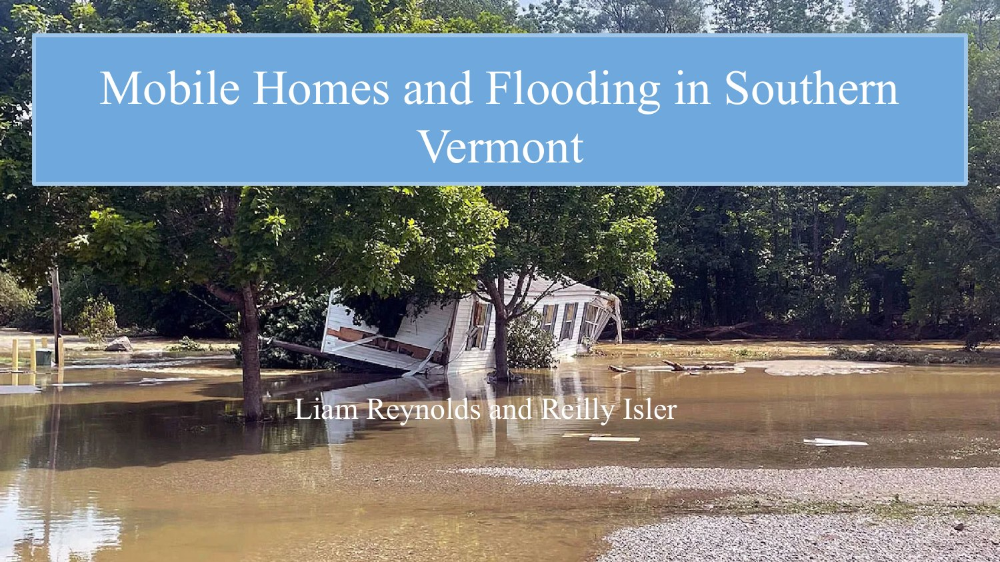

The Presentation
Mobile Homes and Flooding in Southern Vermont
A visual essay I made with Reilly Isler about how many of southern Vermont’s mobile homes sit in harm’s way when it floods. The study covers four counties — Bennington, Rutland, Windham, and Windsor — that have been hit by intense flooding over the past 15 years, with major events in 2011 and 2023.
We measured the risk two ways: proximity to FEMA-designated flood zones, and proximity to Vermont River Corridors. And we counted the homes two ways: American Community Survey estimates, which spread mobile homes evenly across an area, and Vermont e911 point data, which pinpoints actual buildings. Put side by side, the ACS consistently underestimates how many mobile homes are at risk — by either flood measure.
The essay also looks at why the risk lands where it does. Mobile homes cluster around towns like Rutland, Brattleboro, and Bennington, and many sit in low-lying areas near flood zones — some of the cheapest land in the region, which is exactly why they were placed there.